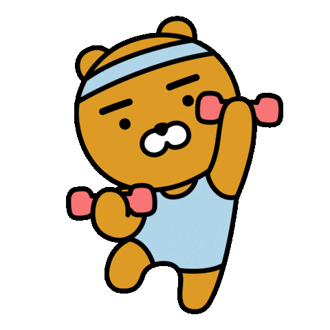
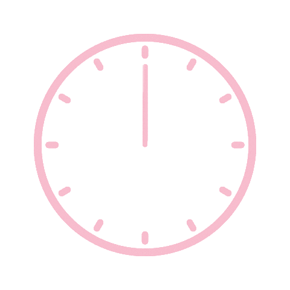

• Exercise releases hormones like endorphins, which improve mood and reduce stress.
• Even a 30-minute walk daily can make a difference.

- Exercise Regularly
- Get Good Sleep
- Express Feelings and Talking to Others
- Organize Your Time and Set Priorities
- Relaxation and Meditation Techniques
- Avoid excessive use of electronic devices and social media.
• Teenagers need between 8 and 10 hours of sleep per day.
• Insufficient sleep increases anxiety levels and impairs concentration.
• Insufficient sleep increases anxiety levels and impairs concentration.

• Having a trusted person (family, friends, a therapist) to talk to reduces stress.
• Social support is very important for mental health.
• Social support is very important for mental health.

• Using time management techniques reduces feelings of overwhelm and schoolwork pressure.
• Breaking tasks into smaller steps can make things more manageable.

• Breaking tasks into smaller steps can make things more manageable.
• Such as deep breathing exercises, yoga, or mindfulness.
• These techniques have been proven effective in reducing stress (e.g., programs like Headspace).
• These techniques have been proven effective in reducing stress (e.g., programs like Headspace).

• Excessive use of social media is linked to increased anxiety and depression in adolescents.
• It's helpful to limit daily screen time.
• It's helpful to limit daily screen time.